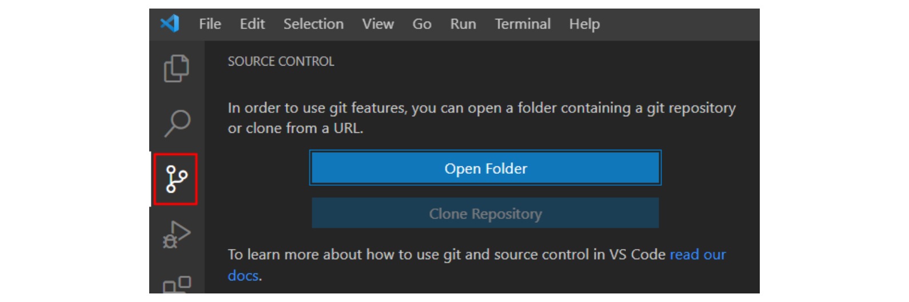

Что такое Git?
Система управления версиями (от англ. Version Control System, VCS или Revision Control System) — программное обеспечение для облегчения работы с изменяющейся информацией.
Система управления версиями позволяет хранить несколько версий одного и того же документа, при необходимости возвращаться к более ранним версиям, определять, кто и когда сделал то или иное изменение, и многое другое.
Одной из самых популярных систем контроль версий является Git
Скачать его можно с официального сайта
Начало работы с Git
Зарегистрируемся на сайте GitHub Далее мы можем создать свой репозиторий, нажав на + в правом верхнем углу.

Далее выставляем настройки, где указываем название репозитория и делаем его публичным (доступным всем пользователям в интернете) или же приватным (доступным только вам и тем, кому вы дадите доступ).
Теперь мы создали наш репозиторий и можем с ним работать
Основные команды Git и советы по работе с ним
- Инициализация репозитория:
- Узнать текущее состояние локального гит репозитория:
- Добавить все файлы из папки:
- Написать комментарий. Сообщения в кавычках " " - изменения которые произошли:
- Добавить ссылку на репозиторий - подключение к репозиторию:
- Залить проект в репозиторий:
git init
git status
git add .
git commit -m
git remote add origin
git push
Во время разработки новой функциональности считается хорошей практикой работать с копией оригинального проекта, которую называют веткой. Ветви имеют свою собственную историю и изолированные друг от друга изменения до тех пор, пока вы не решаете слить изменения вместе.
Это происходит по набору причин:
- Уже рабочая, стабильная версия кода сохраняется.
- Различные новые функции могут разрабатываться параллельно разными программистами.
- Разработчики могут работать с собственными ветками без риска, что кодовая база поменяется из-за чужих изменений.
- В случае сомнений, различные реализации одной и той же идеи могут быть разработаны в разных ветках и затем сравниваться.
Работа с ветками
- Создание ветки:
Основная ветка в каждом репозитории называется master. Чтобы создать еще одну ветку, используем команду:git branch Session2Для просмотра существующих веток используют команду:
git branch -
Переключение между ветками:
git checkout имя_ветки -
Объединение веток:
git merge имя_ветки -
Удаление ветки:
git branch -d имя_ветки
Source control
Прежде чем начинать работу с Git и изучать его преимущества в плане контроля исходного кода, необходимо произвести инициализацию проекта в качестве репозитория. Процедура требует предварительного запуска самого редактора VS Code. После этого уже в нем необходимо запустить интегрированный терминал. В этом поможет комбинация клавиш Ctrl + `
В нем создаем папку под новую задачу и сразу перейдем в нее:
mkdir git_test
cd git_test
Теперь очередь репозитория Git:
git init
Те же настройки Git возможны в интерфейсе Visual Studio Code. Следует открыть окно Source Control слева на панели и там нажать Open Folder.
При клике на нее система откроет менеджер файлов с открытой по умолчанию текущей папкой. Если предпочтительна другая папка, ее можно выбрать нажатием Open и следом Initialize Repository.
После инициализации в файловой системе накопителя появится каталог .git. Просмотр доступен по команде, введенной в терминале:
ls –la
Результат просмотра будет выглядеть так:
...
.git
Содержимое экрана указывает на то, что инициализация репозитория была осуществлена, и теперь туда требуется внести файл index.html. После создания «индекса» в панели Source Control рядом с его наименованием будет находиться буква U. Она показывает «не отслеживаемые файлы», в эту категорию попадают все только что созданные или скорректированные файлы, не перенесенные в архив репозитория.
Чтобы добавить объект туда, достаточно кликнуть на значок «плюс», расположенный рядом с созданным index.html.
Смена статуса отслеживается по появлению буквы A – она показывает, что Visual Studio и Git стартовали «совместную работу». Запись изменений сработает после команды на отправку, она расположена внутри поле ввода сверху на панели Source Control. Остается кликнуть на галочку и убедиться, что несохраненные изменения отсутствуют.
Ради мониторинга работы системы сделаем изменения в файле index.html. Например, создадим в нем раздел <body>, а внутри заголовок уровня <h1> (содержимое любое). После сохранения рядом с наименованием файла появится буква M.
Она указывается на различие копии, хранящейся в Git и на «локальном носителе». Если пользователь считает внесенные корректировки правильными, их можно отправить в репозиторий при помощи той же иконки с галочкой (контроль по наличию буквы A)
Вот мы вкратце и ознакомились, как работать с Git на платформе VS Code. Теперь рассмотрим варианты интерпретации показателей Gutter.
Интерпретация показателей Gutter
И начнем с определения, что же представляет собой концепция Gutter («желоб») в программном обеспечении Visual Studio Code. Формально – это всего лишь некая область, расположенная справа от номера строки. В ней расположены иконки «Свернуть» и «Развернуть», необходимые для того, чтобы при редактировании была возможность сворачивать код и разворачивать его. Есть и другой функционал.
Так, при внесении изменений, например, внутри тега <h1> можно увидеть, что строку с новыми данными система пометила синей вертикальной чертой (в области Gutter). Такое будет происходить со всеми ранее созданными строчками, куда пользователь вносил новый код.
Схожим образом программа помечает удаление строк или их части. Для проверки удалим любое содержимое раздела <body> и в результате увидим красный треугольник, появившийся все в той же области Gutter. Тем же знаком будет помечена и группа строк, например, если вырезали целый кусок кода, состоящего из нескольких строчек.
При добавлении совершенно новой строки, а не редактировании существующей, программа отображает вертикальную зеленую полосу, и этот индикатор снова расположен в области Gutter. Благодаря такому подходу разработчик видит визуально отделенные друг от друга части прежнего кода, где нет никаких изменений и нововведений, которые он только что внес сам.
Перед сохранением файла легко перепроверить корректировки, чтобы убедиться в отсутствии ошибок.
Просмотр отличий файлов
Инструмент VS Code помогает быстро сравнивать две версии файла. Например, если была задача отредактировать index.html и заказчику требуется убедиться во внесении изменений исполнителем. Конечно, можно воспользоваться утилитой сравнения файлов diff, но удобнее работать встроенным функционалом программы.
Всего-то достаточно открыть панель контроля кода и пару раз кликнуть по скорректированному ранее объекту (пусть остается index.html). Система автоматически откроет окошко для сравнения, в нем последняя версия кода отобразится слава, а до этого перенесенная в репозиторий – справа. «Нестыковки» будут помечены зеленым цветом при наличии кода в строке и серым при его отсутствии.
Работа с ветвлением
Программное обеспечение VS Code поддерживает редактуру с ветвлением кода. Название текущей ветки отображается снизу левой части окна редактора, рядом с иконкой контроля исходного кода («дорожная развилка»). По умолчанию программа показывает главную ветку. Чтобы сделать ответвление от нее, нужно нажать на ее наименование и в открывшемся меню выбрать Create new branch. Например, создадим тестовую ветку под названием test.
После сохранения внесем какие-либо изменения в файл index.html. Появится возможность перехода в главную ветку master и обратно в test (слева в нижнем углу экрана редактирования). Если перейти на основную ветку, будет видно, что внесенный в ответвлении текст отсутствует в коде, как и положено. Чтобы сохранить корректировки, объект выгружают в репозиторий и проверяют его текущий статус (должна отображаться буква A).
Поддержка удаленных репозиториев
В функционал панели Source Control входит поддержка удаленных репозиториев. В рамках данной статьи углубляться в эту тему мы не будем. Но знать о такой возможности нужно, особенно тем, кто уже имел опыт работы с pull, sync, publish и другими подобными репозиториями. Здесь же продолжим разбираться, как работать с Git.
Плагины для работы с Git
Git History Diff
Хотя вы можете просматривать текущие изменения, сравнивать версии и управлять ветвлением с помощью встроенных функций VS Code, они не дают возможности просматривать историю Git.
Git Graph
Git Graph делает работу с Git в VS Code приятной чисто визуально. Вы видите древовидную структуру коммитов, а это помогает в осуществлении сложных операций. Расширение хорошо настраивается: можно, например, определить стиль схемы и цвета веток. Пользуясь Git Graph, вы можете просто кликнуть по любому коммиту и просмотреть его подробности и изменения в файлах. Вы даже можете проводить код-ревью, не покидая свою IDE!